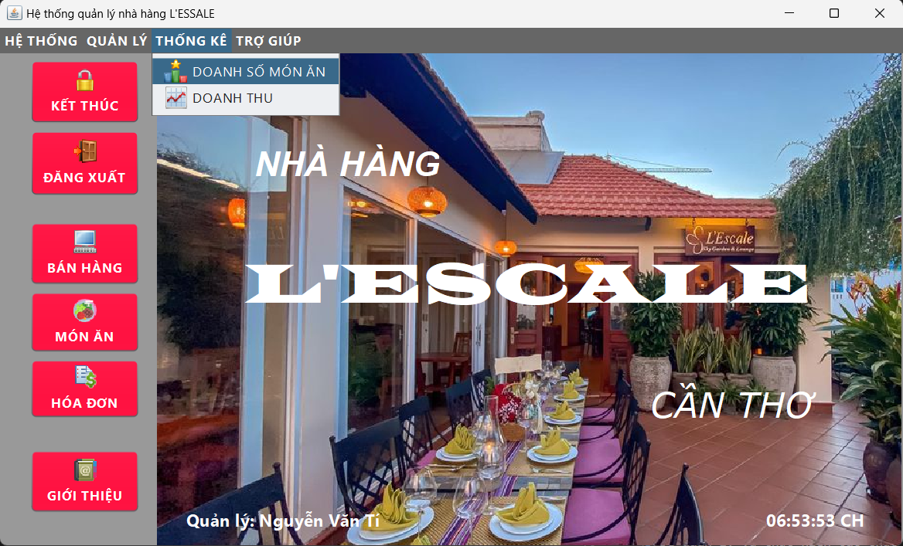
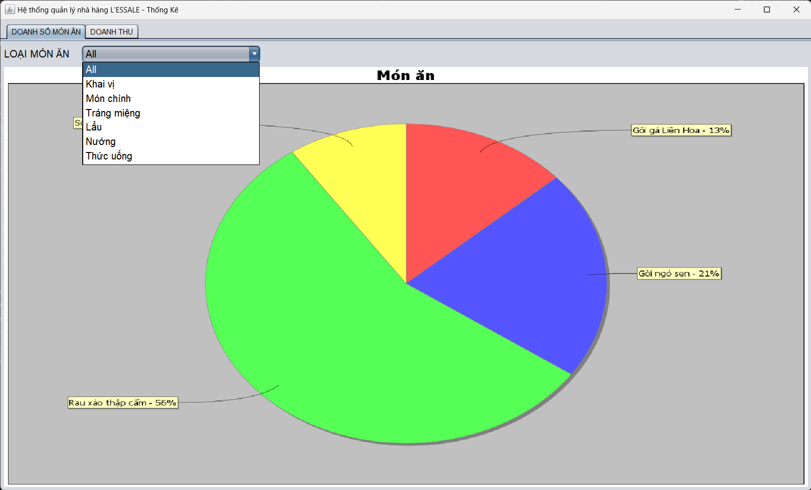
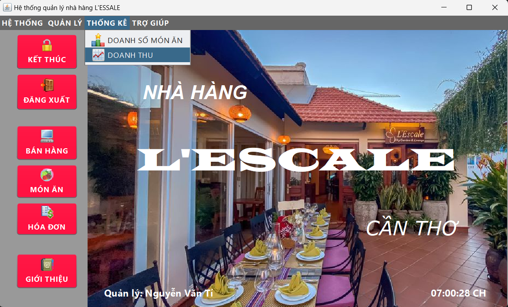
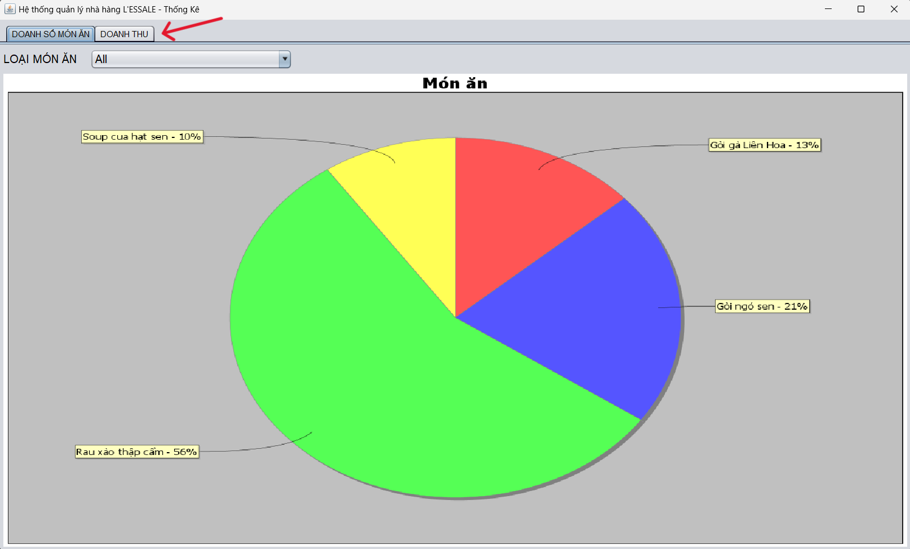
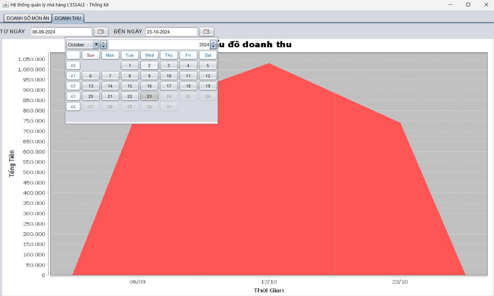

Mục đích: Hỗ trợ người dùng quản lý thông tin các món ăn đang được bán chạy hay và doanh thu nhà hàng theo khoảng thời gian.
Sau khi đăng nhập bằng tài khoản quản lý. Người dùng chọn Menu QUẢN LÝ >> THỐNG KÊ >> DOANH SỐ MÓN ĂN để xem các món ăn được bán chạy nhất trong nhà hàng.
Tại đây người dùng có thể kiểm tra được các thông tin xoay quanh việc kinh doanh món ăn:
+ Biểu đồ tất cả các món ăn.
+ Biểu đồ các món ăn theo loại món.
Người dùng có thể click vào comboBox Loại món ăn để xem thông tin của món ăn bán chạy nhất theo loại món ăn.
Sau khi đăng nhập bằng tài khoản quản lý. Người dùng chọn Menu QUẢN LÝ >> THỐNG KÊ >> DOANH THU để xem các doanh thu của nhà hàng theo khoảng thời gian.
Hoặc nhấn vào tab chuyển trang sang DOANH THU.
Tại đây người dùng có thể kiểm tra được các thông tin doanh thu của nhà hàng theo khoảng thời gian.
Người dùng có thể click vào LỊCH để chọn khoảng thời gian doanh thu muốn xem.
